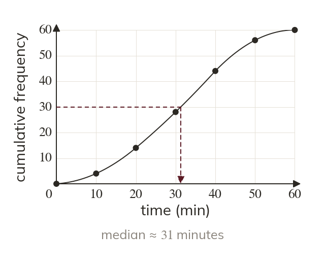
Read at for the median
The median is read at half the total frequency. For values, read across at
A cumulative frequency graph of a hundred values gives the median and the interquartile range in three readings. Two sets of readings then compare two whole groups.
Work down the page at your own pace. Write every answer in your book first, then click to check it.
Read each card, then follow the worked examples one step at a time.

The median is read at half the total frequency. For values, read across at
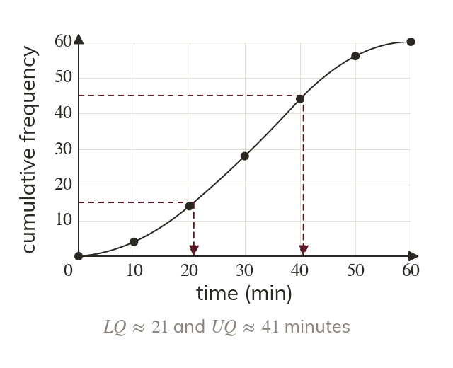
The lower quartile is read at and the upper at
For values, read at and
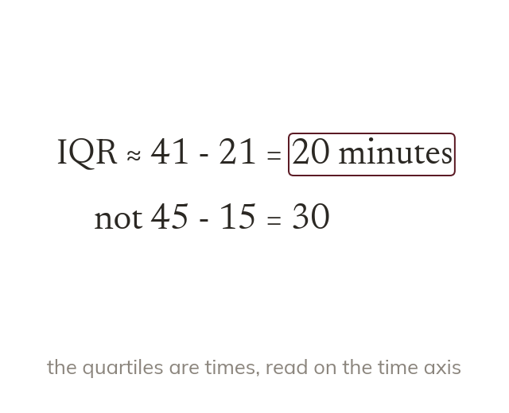
The interquartile range is the upper quartile minus the lower quartile. Here it is about minutes.
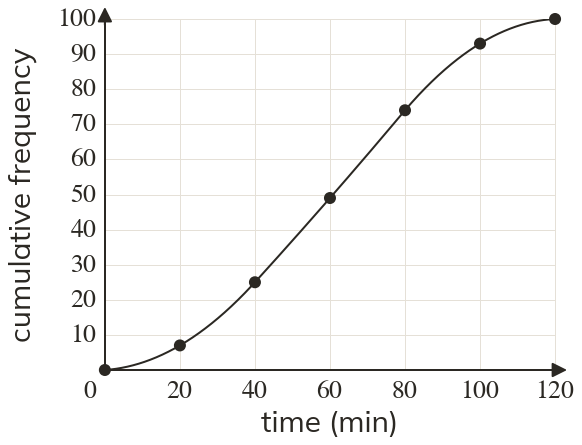
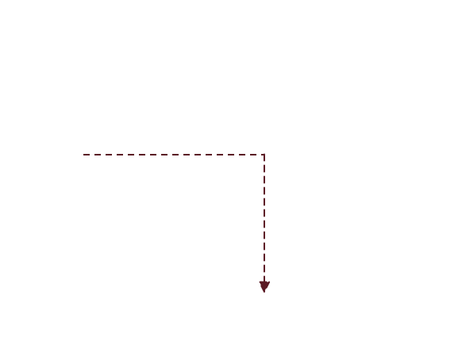
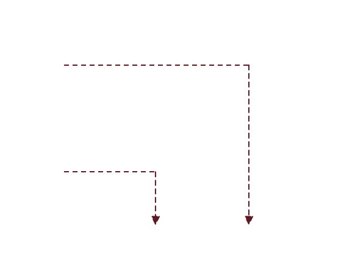
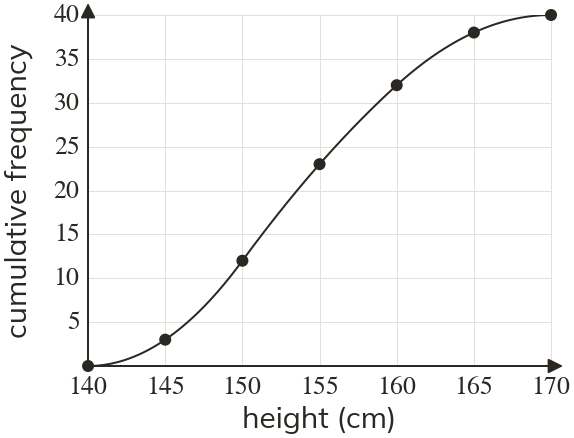
Pick an answer. If it's wrong, the feedback tells you which mistake it was.
Printable worksheet — the questions with room to work.

Read each card, then follow the worked examples one step at a time.
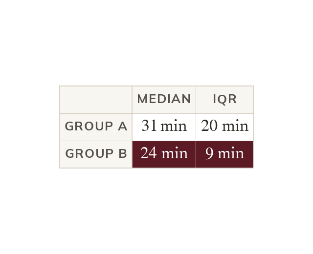
Each graph gives a median and an interquartile range. The two sets of readings are then compared.
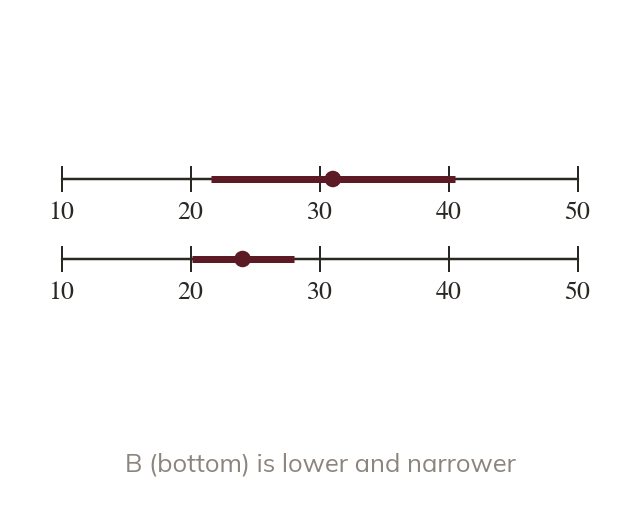
The median compares the typical value. The interquartile range compares how consistent the groups are.
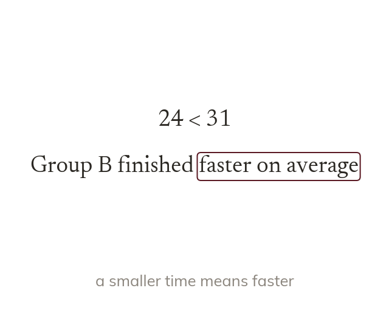
Each comparison names the group and what the numbers mean. 'Group B finished faster on average' is complete.
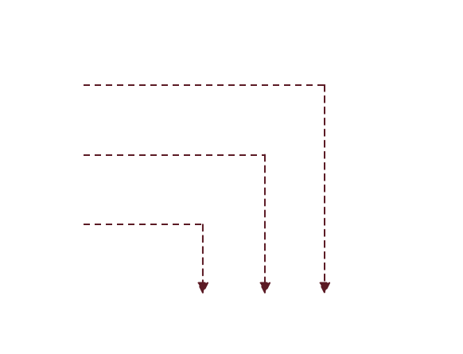
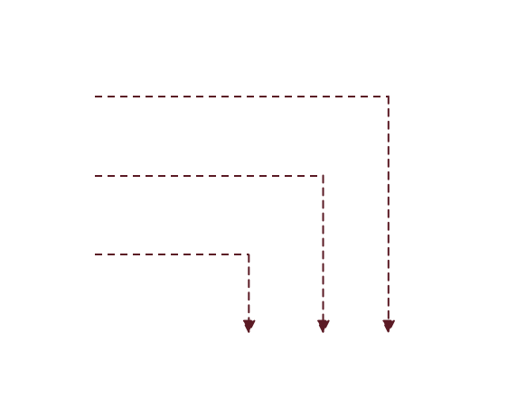
Pick an answer. If it's wrong, the feedback tells you which mistake it was.
Finished? Next lesson: 10H.17.1 Pythagoras in Three Dimensions.
Log in, then search for a code to practise that skill.
Videos, worksheets and more on each part of this lesson.